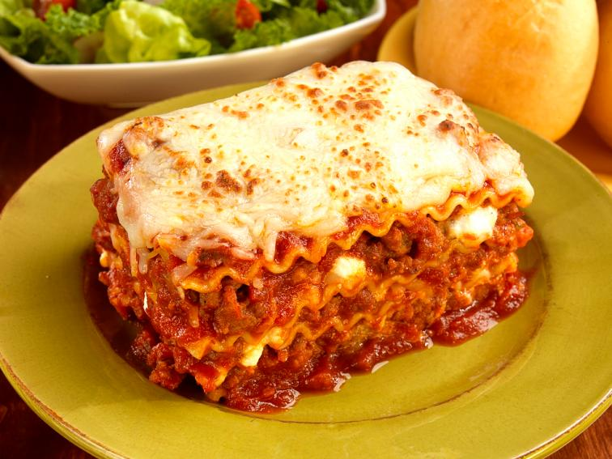

Easy Italian Sausage Lasagna

Ingredients
- 1 pound Bob Evans Italian Roll Sausage
- 1 jar pasta sauce (26 oz)
- 1 can tomato sauce (15 oz)
- 1 package oven ready lasagna noodles (8 oz)
- 1 container ricotta cheese (15 oz)
- 1 teaspoon Italian seasoning
- 4 cups shredded mozzarella cheese
- 1/2 cup grated Parmesan cheese
Steps
- In a skillet, crumble and cook sausage over medium heat until brown. Remove from heat and stir in pasta sauce and tomato sauce.
- In small bowl, combine ricotta cheese and Italian seasoning.
- Preheat oven to 375F. Spread 1 cup sauce into bottom of a 9 x 13 inch baking dish.
- Top with 3 noodles. Cover noodles with 1/3 of ricotta cheese mixture, 1 cup of mozzarella and 1 cup sauce. Repeat layers two more times.
- Add last 3 noodles. Top lasagna with remaining sauce and with remaining mozzarella cheese. Sprinkle Parmesan over mozzarella.
- Cover and bake 45 to 50 minutes or until noodles are tender. Uncover and bake an additional 5 minutes to melt cheese.